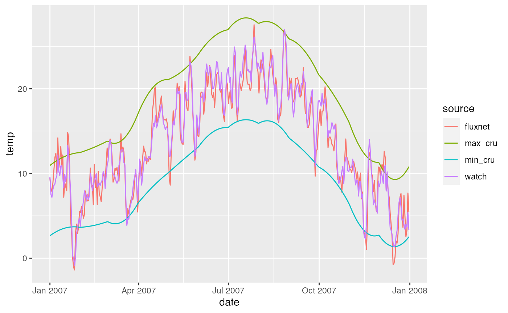
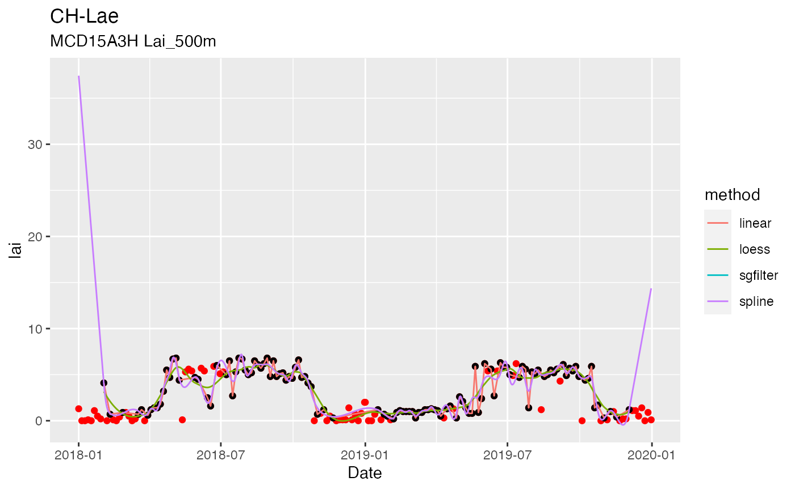
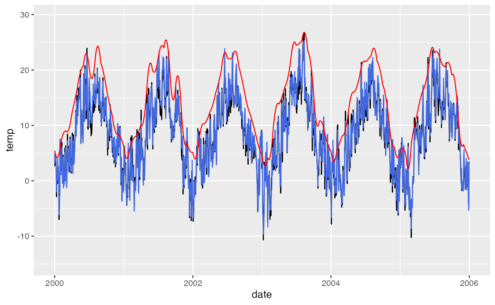
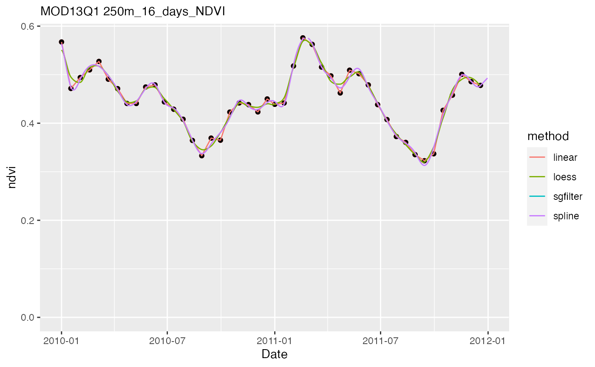
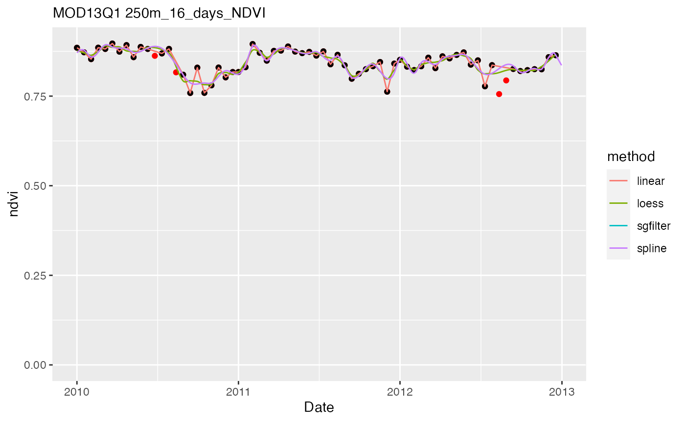

Overview
The package ingestr provides functions to extract (ingest) environmental point data (given longitude, latitude, and required dates) from large global files or remote data servers and create time series at user-specified temporal resolution (currently, just daily implemented).
- Temporal downscaling from montly to daily resolution
- Quality filtering, temporal interpolation and smoothing of remote sensing data
- Handling of different APIs and file formats, returning ingested data in tidy format.
This is to make your life simpler when downloading and reading site-scale data, using a common interface with a single function for single-site and multi-site ingest, respectively, and a common and tidy format of ingested data across a variety of data sources and formats of original files. Sources, refers to both data sets hosted remotely and accessed through an API and local data sets. ingestr is particularly suited for preparing model forcing and offers a set of functionalities to transform original data into common standardized formats and units. This includes interpolation methods for converting monthly climate data (CRU TS currently) to daily time steps.
The key functions are ingest_bysite() and ingest() for a single-site data ingest and a multi-site data ingest, respectively. For the multi-site data ingest, site meta information is provided through the argument siteinfo which takes a data frame with columns lon for longitude, lat for latitude, and (for time series downloads) year_start and year_end, specifying required dates (including all days of respective years). Sites are organised along rows. An example site meta info data frame is provided as part of this package for sites included in the FLUXNET2015 Tier 1 data set (additional columns are not required by ingest_bysite() and ingest()):
siteinfo_fluxnet2015 %>%
slice(1:5) %>%
knitr::kable()| sitename | lon | lat | elv | year_start | year_end | classid | c4 | whc | koeppen_code | igbp_land_use | plant_functional_type |
|---|---|---|---|---|---|---|---|---|---|---|---|
| AR-SLu | -66.4598 | -33.4648 | 499 | 2009 | 2011 | MF | FALSE | 268.4240 | Bwk | NA | NA |
| AR-Vir | -56.1886 | -28.2395 | 97 | 2009 | 2012 | ENF | FALSE | 302.4276 | Csb | NA | NA |
| AT-Neu | 11.3175 | 47.1167 | 970 | 2002 | 2012 | GRA | FALSE | 270.0856 | Dfc | Mixed Forests | Evergreen Broadleaf Trees |
| AU-Ade | 131.1178 | -13.0769 | 81 | 2007 | 2009 | WSA | FALSE | 269.2187 | Aw | Savannas | Grass |
| AU-ASM | 133.2490 | -22.2830 | 606 | 2010 | 2013 | ENF | FALSE | 214.5843 | BSh | Open Shrublands | Shrub |
The following sources can be handled currently:
| Data source | Data type | Coverage | Source ID | Reading from | Remark |
|---|---|---|---|---|---|
| FLUXNET | time series by site | site | fluxnet |
local files | |
| WATCH-WFDEI | time series raster map | global | watch_wfdei |
local files | |
| CRU | time series raster map | global | cru |
local files | |
| MODIS LP DAAC | time series raster map | global | modis |
remote server | using MODISTools |
| Google Earth Engine | time series raster map | global | gee |
remote server | using Koen Hufken’s gee_suset library |
| ETOPO1 | raster map | global | etopo1 |
local files | |
| Mauna Loa CO2 | time series | site | co2_mlo |
remote server | using the climate R package |
| HWSD | |
||||
| WWF Ecoregions | shapefile map | global | wwf |
local files | Olsen et al. (2001) |
| N deposition | time series raster map | global | ndep |
local files | Lamarque et al. (2011) |
| SoilGrids | raster map | global | soilgrids |
remote server | Hengl et al. (2017) |
| ISRIC WISE30sec | raster map | global | wise |
local files | Batjes (2016) |
| GSDE Soil | raster map | global | gsde |
local files | Shangguan et al. 2014 |
| WorldClim | raster map | global | gsde |
local files | Fick & Hijmans, 2017 |
Examples to read data for a single site for each data type are given in Section ‘Examples for a single site’. Handling ingestion for multiple sites is described in Section ‘Example for a set of sites’. Note that this package does not provide the original data. Please follow links to data sources above where data is read from local files, and always cite original references.
Variable names and units
All ingested data follows standardized variable naming and (optionally) units.
| Variable | Variable name | Units |
|---|---|---|
| Gross primary production | gpp |
g CO\(^{-2}\) m\(^{-2}\) |
| Air temperature | temp |
\(^\circ\)C |
| Daily minimum air temperature | tmin |
\(^\circ\)C |
| Daily maximum air temperature | tmax |
\(^\circ\)C |
| Precipitation | prec |
mm s\(^{-1}\) |
| Vapour pressure deficit | vpd |
Pa |
| Atmospheric pressure | patm |
Pa |
| Net radiation | netrad |
J m\(^{-2}\) s\(^{-1}=\) W m\(^{-2}\) |
| Photosynthetic photon flux density | ppfd |
mol m\(^{-2}\) s\(^{-1}\) |
| Elevation (altitude) | elv |
m a.s.l. |
Use these variable names for specifying which variable names they correspond to in the original data source (see argument getvars to functions ingest() and ingest_bysite()). gpp is cumulative, corresponding to the time scale of the data. For example, if daily data is read, gpp is the total gross primary production per day (g CO\(^{-2}\) m\(^{-2}\) d\(^{-1}\)).
Examples for a single site
The function ingest_bysite() can be used to ingest data for a single site. The argument source specifies which data type (source) is to be read from and triggers the use of specific wrapper functions that are designed to read from original files with formats that differ between sources. Source-specific settings for data processing can be provided by argument settings (described for each data source below). More info about other, source-independent arguments are available through the man page (see ?ingest_bysite).
FLUXNET
Meteo data
Reading from FLUXNET files offers multiple settings to be used specified by the user. Here, we’re specifying that no soil water content data is read (getswc = FALSE in settings_fluxnet, passed to ingest_bysite() through argument settings).
settings_fluxnet <- list(getswc = FALSE)
df_fluxnet <- ingest_bysite(
sitename = "FR-Pue",
source = "fluxnet",
getvars = list(temp = "TA_F",
prec = "P_F",
vpd = "VPD_F",
ppfd = "SW_IN_F",
netrad = "NETRAD",
patm = "PA_F"),
dir = paste0(path.package("ingestr"), "/extdata/"), # example file delivered through package and located here
settings = settings_fluxnet,
timescale = "d",
year_start = 2007,
year_end = 2007,
verbose = FALSE
)## Warning: Reading only largest daily file available## Warning: Unknown columns: ``
df_fluxnet## date temp prec vpd ppfd netrad patm
## 1: 2007-01-01 9.429 2.546296e-05 172.9 1.062656e-04 4.165396 99944
## 2: 2007-01-02 8.229 6.944444e-06 405.5 1.917131e-04 -22.228854 99992
## 3: 2007-01-03 7.868 0.000000e+00 445.5 1.874556e-04 -16.581958 100075
## 4: 2007-01-04 8.878 0.000000e+00 360.5 8.284236e-05 -16.814208 99337
## 5: 2007-01-05 10.360 0.000000e+00 484.4 1.826514e-04 -17.604217 99419
## ---
## 361: 2007-12-27 4.998 0.000000e+00 359.3 1.831308e-04 -23.117354 99871
## 362: 2007-12-28 2.528 0.000000e+00 170.6 1.898057e-04 -14.648167 99831
## 363: 2007-12-29 3.283 0.000000e+00 170.8 1.793976e-04 27.553979 99585
## 364: 2007-12-30 7.685 2.314815e-06 452.5 1.930044e-04 -22.521875 99194
## 365: 2007-12-31 5.416 0.000000e+00 446.1 1.809786e-04 -29.687771 99185
## sitename
## 1: FR-Pue
## 2: FR-Pue
## 3: FR-Pue
## 4: FR-Pue
## 5: FR-Pue
## ---
## 361: FR-Pue
## 362: FR-Pue
## 363: FR-Pue
## 364: FR-Pue
## 365: FR-Puegetvars defines the variable names in the original files corresponding to the respective variables with ingestr-standard naming (see table above). The example above triggers the ingestion of the six variables "TA_F", "P_F", "VPD_F", "SW_IN_F", "NETRAD", "PA_F" for "temp", "prec", "vpd", "ppfd", "netrad", "patm", respectively.
Flux data
The same function can also be used to read in other FLUXNET variables (e.g., CO2 flux data) and conduct data filtering steps. Here, we’re reading daily GPP and uncertainty (standard error), based on the nighttime flux decomposition method ("GPP_NT_VUT_REF" and "GPP_NT_VUT_SE" in argument getvars). The settings argument can be used again to specify settings that are specific to the "fluxnet" data source. Here, we keep only data where at least 80% is based on non-gapfilled half-hourly data (threshold_GPP = 0.8), and where the daytime and nighttime-based estimates are consistent, that is, where their difference is below the the 97.5% and above the 2.5% quantile (filter_ntdt = TRUE). Negative GPP values are not removed (remove_neg = FALSE). We read data for just one year here (2007).
settings_fluxnet <- list(
getswc = FALSE,
filter_ntdt = TRUE,
threshold_GPP= 0.8,
remove_neg = FALSE
)
ddf_fluxnet <- ingest_bysite(
sitename = "FR-Pue",
source = "fluxnet",
getvars = list( gpp = "GPP_NT_VUT_REF",
gpp_unc = "GPP_NT_VUT_SE"),
dir = paste0(path.package("ingestr"), "/extdata/"),
settings = settings_fluxnet,
timescale = "d",
year_start = 2007,
year_end = 2007
)Settings
The argument settings in functions ingest_bysite() and ingest() is used to pass settings that are specific to the data source (argument source) with which the functions are used. Default settings are specified for each data source. For source = "fluxnet", defaults are returned by a function call of get_settings_fluxnet() and are described in the function’s man page (see ?get_settings_fluxnet). Defaults are used for settings elements that are not specified by the user.
WATCH-WFDEI
Let’s extract data for the location corresponding to FLUXNET site ‘CH-Lae’ (lon = 8.365, lat = 47.4781). This extracts from original WATCH-WFDEI files, provided as NetCDF (global, 0.5 degree resolution), provided as monthly files containing all days in each month. The data directory specified here (dir = "~/data/watch_wfdei/") contains sub-directories with names containing the variable names. The argument getvars works a differently compared to "fluxnet". Here, getvars is a vector of ingestr-standard variable names to be read. ingestr automatically reads from the respective files with WATCH-WFDEI variable names. Available variables are: "temp", "ppfd", "vpd", "patm", "prec". The latter is the sum of snow and rain. Below, we read data for just one year here (2007).
A bias correction may be applied by specifying the settings as in the example below. By specifying correct_bias = "worldclim" (the only option currently available), this uses a high-resolution (30’’) monthly climatology based on years 1970-2000 and corrects the WATCH-WFDEI data by month, based on the difference (ratio for variables other than temperature) of its monthly means, averaged across 1979-2000.
WATCH-WFDEI data is available for years from 1979. If year_start is before that, the mean seasonal cycle, averaged across 1979-1988 is returned for all years before 1979.
df_watch <- ingest_bysite(
sitename = "FR-Pue",
source = "watch_wfdei",
getvars = c("temp"),
dir = "~/data/watch_wfdei/",
timescale = "d",
year_start = 2007,
year_end = 2007,
lon = 3.5958,
lat = 43.7414,
verbose = TRUE,
settings = list(correct_bias = "worldclim", dir_bias = "~/data/worldclim")
)## Warning: The `x` argument of `as_tibble.matrix()` must have unique column names if `.name_repair` is omitted as of tibble 2.0.0.
## Using compatibility `.name_repair`.
df_watchCRU TS
As above, let’s extract CRU data for the location corresponding to FLUXNET site ‘FR-Pue’ (lon = 8.365, lat = 47.4781). The argument getvars works the same way as for WATCH-WFDEI: is a vector of ingestr-standard variable names to be read. ingestr automatically reads from the respective files with CRU variable names. Available variables are: "tmin", "tmax", "temp", "vpd", "ccov", "wetd".
Note that we’re using tmx (the daily maximum temperature). This extracts monthly data from the CRU TS data. Interpolation to daily values is done using a weather generator for daily precipitation (given monthly total precipitation and number of wet days in each month), and a polynomial that conserves monthly means for all other variables.
df_cru <- ingest_bysite(
sitename = "FR-Pue",
source = "cru",
getvars = c("tmin", "tmax"),
dir = "~/data/cru/ts_4.05/",
timescale = "d",
year_start = 2007,
year_end = 2007,
lon = 3.5958,
lat = 43.7414,
verbose = FALSE
)## Warning in .varName(nc, varname, warn = warn): varname used is: tmn
## If that is not correct, you can set it to one of: tmn, stn## Warning in .varName(nc, varname, warn = warn): varname used is: tmx
## If that is not correct, you can set it to one of: tmx, stn
df_cru## # A tibble: 365 x 4
## date tmax tmin sitename
## <date> <dbl> <dbl> <chr>
## 1 2007-01-01 10.9 2.70 FR-Pue
## 2 2007-01-02 11.0 2.78 FR-Pue
## 3 2007-01-03 11.0 2.87 FR-Pue
## 4 2007-01-04 11.1 2.95 FR-Pue
## 5 2007-01-05 11.2 3.03 FR-Pue
## 6 2007-01-06 11.2 3.10 FR-Pue
## 7 2007-01-07 11.3 3.17 FR-Pue
## 8 2007-01-08 11.3 3.24 FR-Pue
## 9 2007-01-09 11.4 3.30 FR-Pue
## 10 2007-01-10 11.4 3.36 FR-Pue
## # … with 355 more rowsWe can compare the temperature recorded at the site and the temperature data extracted from WATCH-WFDEI and CRU.
df <- df_fluxnet %>%
rename(temp_fluxnet = temp) %>%
left_join(rename(df_watch, temp_watch = temp), by = c("sitename", "date")) %>%
left_join(rename(df_cru, temp_min_cru = tmin, temp_max_cru = tmax), by = c("sitename", "date")) %>%
pivot_longer(cols = c(temp_fluxnet, temp_watch, temp_min_cru, temp_max_cru), names_to = "source", values_to = "temp", names_prefix = "temp_")
library(ggplot2)
df %>%
ggplot(aes(x = date, y = temp, color = source)) +
geom_line()## Warning: Removed 365 row(s) containing missing values (geom_path).
Looks sweet.
MODIS LP DAAC
This uses the MODISTools R package making its interface consistent with ingestr. Settings can be specified and passed on using the settings argument. To facilitate the selection of data products and bands to be downloaded, you may use the function get_settings_modis) which defines defaults for different data bundles (c("modis_fpar", "modis_ndvi", "modis_evi") are available).
-
"modis_fpar": MODIS collection 6, MCD15A3H, bandFpar_500m -
"modis_lai": MODIS collection 6, MCD15A3H, bandLai_500m -
"modis_evi": MODIS collection 6, MOD13Q1, band250m_16_days_EVI -
"modis_ndvi": MODIS collection 6, MOD13Q1, band250m_16_days_NDVI -
"modis_refl": MODIS/Terra+Aqua Nadir BRDF-Adjusted Reflectance (NBAR) Daily L3 Global 500 m SIN Grid, all bands
The filtering criteria are hard-coded specifically for each product, using its respective quality control information (see function gapfill_interpol() in R/ingest_modis_bysite.R). For more information on the settings do ?get_settings_modis.
The following example is for downloading MODIS FPAR MCD15A3H data. Note the specification of the argument network = "FLUXNET". This triggers the download of prepared subsets aligning with site locations for different networks (see here) which is much faster than the download of data for arbitrary locations. This also makes the specification of longitude and latitude values in the call to ingest_bysite() obsolete and downloads a scene of 17 x 17 pixels. Using n_focal in get_settings_modis() subsets the scene to central pixels where the value provided for n_focal is the distance in number of pixels away from the center pixel to be taken for averaging. This is done the same way for the network and non-network ingest options.
settings_modis <- get_settings_modis(
bundle = "modis_fpar",
data_path = "~/data/modis_subsets/",
method_interpol = "loess",
keep = TRUE,
overwrite_raw = FALSE,
overwrite_interpol= TRUE,
n_focal = 0,
network = "FLUXNET"
)This can now be used to download the data to the directory specified by argument data_path of function get_settings_gee(). The data downloaded through MODISTools is then stored in <data_path>/raw/. When calling the functions ingest() or ingest_bysite() with the setting overwrite_raw = FALSE, the raw data file is read and not re-downloaded if available locally. Raw data contains information only for dates where MODIS data is provided. ingest() and ingest_bysite() interpolate to daily values following the setting method_interpol.
Note also that downloaded raw data are cutouts including pixels of 1 km within the focal point indicated by the site longitude and latitude (using arguments km_lr = 1.0 and km_ab = 1.0 in the MODISTools::mt_subset() call). This is hard-coded in ingestr. To select a smaller radius of pixels around the focal point included for taking the mean, set the setting n_focal to an integer (0:N), with 0 selecting only the single centre pixel in which the site is located, N=1 for including one pixel around the centre (nine in total), N=2 for 25 in total etc.
df_modis_fpar <- ingest_bysite(
sitename = "CH-Lae",
source = "modis",
year_start= 2018,
year_end = 2019,
# lon = 8.36439, # not needed when network = "FLUXNET"
# lat = 47.47833, # not needed when network = "FLUXNET"
settings = settings_modis,
verbose = FALSE
)## Number of available pixels: 289## Averaging across number of pixels: 1## loess...## spline...## linear ...## sgfilter ...Plot this data.
plot_fapar_ingestr_bysite(
df_modis_fpar,
settings_modis)## Warning: Removed 546 rows containing missing values (geom_point).## Warning: Removed 614 rows containing missing values (geom_point).## Warning: Removed 236 row(s) containing missing values (geom_path).
Google Earth Engine
The library gee_subset by Koen Hufkens can be downloaded from this link and used to extract data directly from Google Earth Engine. Note that this requires the following programmes to be available:
- git: You can use Homebrew to installing git by entering in your terminal:
brew install git. - python
- The Python Pandas library
Then, carry out the follwing steps:
- In your terminal, change to where you want to have the repository. In this example, we’re cloning it into our home directory:
cd ~
git clone https://github.com/khufkens/google_earth_engine_subsets.gitTo get access to using the Google Earth Engine API (required to use the gee_subset library), carry out the following steps in your terminal. This follows steps described here.
- Install google API Python client
sudo pip install --upgrade google-api-python-clientI had an error and first had to do this here following this link:
sudo pip install --ignore-installed six- Install pyCrypto
sudo pip install pyCrypto --upgrade- Install Python GEE API
sudo pip install earthengine-api- Run authentification for GEE
earthengine authenticate- Finally, try if it works. This shouldn’t return an error:
python -c "import ee; ee.Initialize()"MODIS FPAR
To facilitate the selection of data products and bands to be downloaded, you may use the function get_settings_gee() which defines defaults for different data bundles (c("modis_fpar", "modis_evi", "modis_lai", "modis_gpp") are available).
-
"modis_fpar": MODIS/006/MCD15A3H, band Fpar -
"modis_evi": MODIS/006/MOD13Q1, band EVI -
"modis_lai": MOD15A2, bandLai_1km -
"modis_gpp": MODIS/006/MOD17A2H, band Gpp
The following example is for downloading MODIS FPAR data.
settings_gee <- get_settings_gee(
bundle = "modis_fpar",
python_path = system("which python", intern = TRUE),
gee_path = "~/google_earth_engine_subsets/gee_subset/",
data_path = "~/data/gee_subsets/",
method_interpol = "linear",
keep = TRUE,
overwrite_raw = FALSE,
overwrite_interpol= TRUE
)This can now be used to download the data to the directory specified by argument data_path of function get_settings_gee().
df_gee_modis_fpar <- ingest_bysite(
sitename = "CH-Lae",
source = "gee",
year_start= 2009,
year_end = 2010,
lon = 8.36439,
lat = 47.47833,
settings = settings_gee,
verbose = FALSE
)CO2
Ingesting CO2 data is particularly simple. We can safely assume it’s well mixed in the atmosphere (independent of site location), and we can use a annual mean value for all days in respective years, and use the same value for all sites. Using the R package climate, we can load CO2 data from Mauna Loa directly into R. This is downloading data from ftp://aftp.cmdl.noaa.gov/products/trends/co2/co2_mm_mlo.txt. Here, ingest() is a wrapper for the function climate::meteo_noaa_co2().
df_co2 <- ingest_bysite(
sitename = "CH-Lae",
source = "co2_mlo",
year_start= 2007,
year_end = 2014,
verbose = FALSE
)Argument dir can be provided here, too. In that case, CO2 data is written (after download if it’s not yet available) and read to/from a file located at <dir>/df_co2_mlo.csv.
More info about the climate package and the data can be obtained here and by:
?climate::meteo_noaa_co2THE FOLLOWING IS UNDER CONSTRUCTION. MAKE READABLE FOR FILE AVAILABLE HERE: http://www.pik-potsdam.de/~mmalte/rcps/
Mauna Loa CO2 is not available for years before 1958. Alternative CO2 data is from CMIP standard forcing with merged time series from atmospheric measurements and ice core reconstructions. This can be selected with source = "co2_cmip.
df_co2 <- ingest_bysite(
sitename = "CH-Lae",
source = "co2_cmip",
year_start= 2007,
year_end = 2014,
verbose = FALSE,
dir = "~/data/co2"
)HWSD
Four steps are required before you can use ingest_bysite() to get HWSD data:
- The the modified version of David LeBauer’s rhwsd R package. The modified version can be installed by:
if(!require(devtools)){install.packages(devtools)}
devtools::install_github("stineb/rhwsd")- Install additionally required packages: DBI and RSQLite.
list.of.packages <- c("DBI", "RSQLite")
new.packages <- list.of.packages[!(list.of.packages %in% installed.packages()[,"Package"])]
if(length(new.packages)) install.packages(new.packages)- Download the HWSD data file HWSD_RASTER.zip and extract.
- Move the extracted files to a local directory and adjust the file path in the
settingsargument accordingly (in this example:"~/data/hwsd/HWSD_RASTER/hwsd.bil").
Then, use similarly to above, with providing the path to the downloaded file with the settings argument:
df_hwsd <- ingest_bysite(
sitename = "CH-Lae",
source = "hwsd",
lon = 8.36439,
lat = 47.47833,
settings = list(fil = "~/data/hwsd/HWSD_RASTER/hwsd.bil"),
verbose = FALSE
)Nitrogen deposition
This reads nitrogen deposition from global annual maps by Lamarque et al. (2011). This provides annual data separately for NHx and NOy in gN m\(^{-2}\) yr\(^{-1}\) from a global map provided at half-degree resolution and covering years 1860-2009.
df_ndep <- ingest_bysite(
sitename = "CH-Lae",
source = "ndep",
lon = 8.36439,
lat = 47.47833,
year_start= 2000,
year_end = 2009,
timescale = "y",
dir = "~/data/ndep_lamarque/",
verbose = FALSE
)SoilGrids
Point extractions from SoilGrids layers are implemented following this and are provided through ISRIC.
Available layers and variable naming conventions are described here. Which variable is to be extracted and for which soil depth layer can be specified in the settings, a list returned by the function call get_settings_soilgrids().
Available variables are described in the table below. Conversion facto are applied by ingestr. Hence, the returned data is in units as described in the table below as “Conventional units”.
| Name | Description | Mapped units | Conversion factor | Conventional units |
|---|---|---|---|---|
| bdod | Bulk density of the fine earth fraction | cg/cm³ | 100 | kg/dm³ |
| cec | Cation Exchange Capacity of the soil | mmol(c)/kg | 10 | cmol(c)/kg |
| cfvo | Volumetric fraction of coarse fragments (> 2 mm) | cm3/dm3 (vol‰) | 10 | cm3/100cm3 (vol%) |
| clay | Proportion of clay particles (< 0.002 mm) in the fine earth fraction | g/kg | 10 | g/100g (%) |
| nitrogen | Total nitrogen (N) | cg/kg | 100 | g/kg |
| phh2o | Soil pH | pHx10 | 10 | pH |
| sand | Proportion of sand particles (> 0.05 mm) in the fine earth fraction | g/kg | 10 | g/100g (%) |
| silt | Proportion of silt particles (≥ 0.002 mm and ≤ 0.05 mm) in the fine earth fraction | g/kg | 10 | g/100g (%) |
| soc | Soil organic carbon content in the fine earth fraction | dg/kg | 10 | g/kg |
| ocd | Organic carbon density | hg/dm³ | 10 | kg/dm³ |
| ocs | Organic carbon stocks | t/ha | 10 | kg/m² |
Data is available for the following six layers.
| Layer | 1 | 2 | 3 | 4 | 5 | 6 |
|---|---|---|---|---|---|---|
| Top depth (cm) | 0 | 5 | 15 | 30 | 60 | 100 |
| Bottom depth (cm) | 5 | 15 | 30 | 60 | 100 | 200 |
The specify which data is to be ingested define the settings using the function get_settings_soilgrids(), and provide standard variable names as a vector of character strings for argument varnam, and layers as a vector of integers for argument layer. For example:
settings_soilgrids <- get_settings_soilgrids(varnam = c("nitrogen", "cec"), layer = 1:3)The ingested data is then averaged across specified layers, weighted with respective layer depths.
Now, the data can be ingested.
df_soilgrids <- ingest_bysite(
sitename = "CH-Lae",
source = "soilgrids",
lon = 8.36439,
lat = 47.47833,
settings = settings_soilgrids
)This returns a data frame with a nested column data which contains actually just a 1 x 1 tibble. This is to be consistent with other ingest options. You may prefer to have a normal flat data frame. Just do:
df_soilgrids %>%
unnest(data)ISRIC WISE30sec
This reads from local files. Download them from ISRIC here.
Point extraction from the global gridded WISE30sec data product (Batjes et al., 2016) can be done for a set of variables and soil layers by specifying the ingest demand in the settings. ingestr returns data as a mean across available map units for selected location (pixel), weighted by the fractional coverage of map units for this pixel. The table below describes available variables (info based on ISRIC Report 2015/01).
| Name | Description |
|---|---|
| CFRAG | Coarse fragments (vol. % > 2mm), mean |
| SDTO | Sand (mass %), mean |
| STPC | Silt (mass %) |
| CLPC | Clay (mass %) |
| PSCL | Texture class (SOTER conventions) |
| BULK | Bulk density (kg dm-3, g cm-3) |
| TAWC | Available water capacity (cm m-1, -33 to -1500 kPa, conform USDA standards) Standard deviation for above |
| CECS | Cation exchange capacity (cmol kg-1) of fine earth fraction |
| BSAT | Base saturation as percentage of CECsoil |
| ESP | Exchangeable sodium percentage |
| CECc | CECclay, corrected for contribution of organic matter (cmol kg-1) |
| PHAQ | pH measured in water |
| TCEQ | Total carbonate equivalent (g C kg-1) |
| GYPS | Gypsum content (g kg-1) |
| ELCO | Electrical conductivity (dS m-1) |
| ORGC | Organic carbon content (g kg-1) |
| TOTN | Total nitrogen (g kg-1) |
| CNrt | C/N ratio |
| ECEC | Effective CEC (cmol kg-1) |
| ALSA | Aluminum saturation (as % of ECEC) |
By default, data is extracted for the top layer only. Data is provided for the following seven layers (depths in cm).
| Layer | Top depth | Bottom depth |
|---|---|---|
| 1 | 0 | 20 |
| 2 | 20 | 40 |
| 3 | 40 | 60 |
| 4 | 60 | 80 |
| 5 | 80 | 1000 |
| 6 | 100 | 150 |
| 7 | 150 | 200 |
The following settings specify data extraction for the C:N ratio of the top three layers. The returned value is the mean across selected soil layers, weighted by the respective layer’s depth. dir specifies the path to the downloaded data bundle. Don’t change the structure of it. ingestr reads from two files: <dir>/GISfiles/wise30sec_fin and <dir>/Interchangeable_format/HW30s_FULL.txt.
settings_wise <- get_settings_wise(varnam = c("CNrt"), layer = 1:7)Now, the data can be ingested.
df_wise <- ingest_bysite(
sitename = "CH-Lae",
source = "wise",
lon = 8.36439,
lat = 47.47833,
settings = settings_wise,
dir = "~/data/soil/wise"
)GSDE Soil
Global Soil Dataset for use in Earth System Models (GSDE) by Shangguan et al. 2014, obtained from here. Available variables are given in the table below.
| No. | Attribute | units | variable name |
|---|---|---|---|
| 1 | total carbon | %of weight | TC |
| 2 | organic carbon | %of weight | OC |
| 3 | total N | %of weight | TN |
| 7 | pH(H2O) | PHH2O | |
| 8 | pH(KCl) | PHK | |
| 9 | pH(CaCl2) | PHCA | |
| 15 | Exchangeable aluminum | cmol/kg | EXA |
| 27 | The amount of P using the Bray1 method | ppm of weight | PBR |
| 28 | The amount of P by Olsen method | ppm of weight | POL |
| 29 | P retention by New Zealand method | % of weight | PNZ |
| 30 | The amount of water soluble P | ppm of weight | PHO |
| 31 | The amount of P by Mehlich method | ppm of weight | PMEH |
| 33 | Total P | % of weight | TP |
| 34 | Total potassium | % of weight | TK |
The 8 layers are:
df_layers <- tibble(layer = 1:8, bottom = c(4.5, 9.1, 16.6, 28.9, 49.3, 82.9, 138.3, 229.6)) %>%
mutate(top = lag(bottom)) %>%
mutate(top = ifelse(is.na(top), 0, top))
df_layers## # A tibble: 8 x 3
## layer bottom top
## <int> <dbl> <dbl>
## 1 1 4.5 0
## 2 2 9.1 4.5
## 3 3 16.6 9.1
## 4 4 28.9 16.6
## 5 5 49.3 28.9
## 6 6 82.9 49.3
## 7 7 138. 82.9
## 8 8 230. 138.Specify the settings directly as a list with elements varnam (a vector of character strings specifying the variables as defined in the table above), and layer (a vector of integers specifying the layers over which a depth-weighted average is taken).
Now, the data can be ingested.
df_gsde <- ingest_bysite(
sitename = "CH-Lae",
source = "gsde",
lon = 8.36439,
lat = 47.47833,
settings = settings_gsde,
dir = "~/data/soil/shangguan"
)And data is returned with variables along columns inside a nested column data, and sites along rows (as for all ingestr). Make it flat by:
df_gsde %>%
unnest(data)## # A tibble: 1 x 4
## # Groups: sitename [1]
## sitename TN PBR PHH2O
## <chr> <dbl> <dbl> <dbl>
## 1 CH-Lae 0.161 9.80 7.07WorldClim
This ingests Worldclim monthly climatology (averaged over 1970-2000) at 30 seconds spatial resolution by Fick & Hijmans, 2017, obtained here. Available variables are:
| Variable name | Description | Units |
|---|---|---|
| bio | Bioclimatic variables (description here) | |
| tmin | Minimum temperature | °C |
| tmax | Maximum temperature | °C |
| tavg | Average temperature | °C |
| prec | Precipitation | mm |
| srad | Solar radiation | kJ m-2 day-1 |
| wind | Wind speed | m s-1 |
| vapr | Water vapour pressure | kPa |
Specify the settings directly as a list with elements varnam (a vector of character strings specifying the variables as defined in the table above), and layer (a vector of integers specifying the layers over which a depth-weighted average is taken).
Now, the data can be ingested.
df_worldclim <- ingest_bysite(
sitename = "CH-Lae",
source = "worldclim",
lon = 8.36439,
lat = 47.47833,
settings = settings_worldclim,
dir = "~/data/worldclim"
)And for Flat-Earthers:
df_worldclim %>%
unnest(data)## # A tibble: 1 x 20
## # Groups: sitename [1]
## sitename bio_1 bio_10 bio_11 bio_12 bio_13 bio_14 bio_15 bio_16 bio_17 bio_18
## <chr> <dbl> <dbl> <dbl> <dbl> <dbl> <dbl> <dbl> <dbl> <dbl> <dbl>
## 1 CH-Lae 8.02 16.2 0.300 1259 130 85 13.0 366 278 366
## # … with 9 more variables: bio_19 <dbl>, bio_2 <dbl>, bio_3 <dbl>, bio_4 <dbl>,
## # bio_5 <dbl>, bio_6 <dbl>, bio_7 <dbl>, bio_8 <dbl>, bio_9 <dbl>Examples for a site ensemble
To collect data from an ensemble of sites, we have to define a meta data frame, here called siteinfo, with rows for each site and columns lon for longitude, lat for latitude, date_start and date_end for required dates (Dates are objects returned by a lubridate::ymd() function call - this stands for year-month-day). The function ingest() can then be used to collect all site-level data as a nested data frame corresponding to the metadata siteinfo with an added column named data where the time series of ingested data is nested inside.
Note that extracting for an ensemble of sites at once is more efficient for data types that are global files (WATCH-WFDEI, and CRU). In this case, the raster package can be used to efficiently ingest data.
First, define a list of sites and get site meta information. The required meta information is provided by the exported data frame siteinfo (it comes as part of the ingestr package). This file is created as described in (and using code from) metainfo_fluxnet2015.
mysites <- c("BE-Vie", "DE-Tha", "DK-Sor", "FI-Hyy", "IT-Col", "NL-Loo", "US-MMS", "US-WCr", "US-UMB", "US-Syv", "DE-Hai")
siteinfo <- ingestr::siteinfo_fluxnet2015 %>%
dplyr::filter(sitename %in% mysites) %>%
dplyr::mutate(date_start = lubridate::ymd(paste0(year_start, "-01-01"))) %>%
dplyr::mutate(date_end = lubridate::ymd(paste0(year_end, "-12-31")))This file looks like this:
print(siteinfo)## # A tibble: 11 x 14
## sitename lon lat elv year_start year_end classid c4 whc
## <chr> <dbl> <dbl> <dbl> <chr> <chr> <chr> <lgl> <dbl>
## 1 BE-Vie 6.00 50.3 493 1996 2014 MF FALSE 313.
## 2 DE-Hai 10.5 51.1 430 2000 2012 DBF FALSE 283.
## 3 DE-Tha 13.6 51.0 380 1996 2014 ENF FALSE 296.
## 4 DK-Sor 11.6 55.5 40 1996 2014 DBF FALSE 226.
## 5 FI-Hyy 24.3 61.8 181 1996 2014 ENF FALSE 255.
## 6 IT-Col 13.6 41.8 1560 1996 2014 DBF FALSE 268.
## 7 NL-Loo 5.74 52.2 25 1996 2013 ENF FALSE 71.1
## 8 US-MMS -86.4 39.3 275 1999 2014 DBF FALSE 343.
## 9 US-Syv -89.3 46.2 540 2001 2014 MF FALSE 223.
## 10 US-UMB -84.7 45.6 234 2000 2014 DBF FALSE 174.
## 11 US-WCr -90.1 45.8 520 1999 2014 DBF FALSE 265.
## # … with 5 more variables: koeppen_code <chr>, igbp_land_use <chr>,
## # plant_functional_type <chr>, date_start <date>, date_end <date>Next, the data can be ingested for all sites at once. Let’s do it for different data types again.
FLUXNET
Meteo data
This ingests meteorological data from the FLUXNET files for variables temperature, precipitation, VPD, shortwave incoming radiation, net radiation, and atmospheric pressure. Arguments that are specific for this data source are provided in the settings list.
ddf_fluxnet <- ingest(
siteinfo = siteinfo %>% slice(1:3),
source = "fluxnet",
getvars = list(temp = "TA_F", prec = "P_F", vpd = "VPD_F", ppfd = "SW_IN_F", netrad = "NETRAD", patm = "PA_F"),
dir = "~/data/FLUXNET-2015_Tier1/20191024/DD/", # adjust this with your local path
settings = list(
dir_hh = "~/data/FLUXNET-2015_Tier1/20191024/HH/", # adjust this with your local path
getswc = FALSE),
timescale = "d",
verbose = TRUE
)## [1] "Getting FLUXNET data for BE-Vie ..."
## [1] "Getting FLUXNET data for DE-Hai ..."
## [1] "Getting FLUXNET data for DE-Tha ..."Flux data
As described above for a single site, the same function can also be used to read in other FLUXNET variables (e.g., CO2 flux data) and conduct data filtering steps. Here, we’re reading daily GPP and uncertainty (standard error), based on the nighttime flux decomposition method (""GPP_NT_VUT_REF""), keep only data where at least 80% is based on non-gapfilled half-hourly data (threshold_GPP = 0.8), and where the daytime and nighttime-based estimates are consistent, that is, where their difference is below the the 97.5% and above the 2.5% quantile (filter_ntdt = TRUE, see also ?get_obs_bysite_fluxnet2015).
settings_fluxnet <- list(
getswc = FALSE,
filter_ntdt = TRUE,
threshold_GPP= 0.8,
remove_neg = FALSE
)
ddf_fluxnet_gpp <- ingest(
siteinfo = siteinfo %>% slice(1:3),
source = "fluxnet",
getvars = list(gpp = "GPP_NT_VUT_REF",
pp_unc = "GPP_NT_VUT_SE"),
dir = "~/data/FLUXNET-2015_Tier1/20191024/DD/", # adjust this with your local path
settings = settings_fluxnet,
timescale= "d"
)WATCH-WFDEI
This extracts from original WATCH-WFDEI files, provided as NetCDF (global, 0.5 degree resolution), provided as monthly files containing all days in each month. The data directory specified here (dir = "~/data/watch_wfdei/") contains subdirectories with names containing the variable names (corresponding to the ones specified by the argument getvars = list(temp = "Tair")).
A bias correction may be applied by specifying the settings as in the example below. By specifying correct_bias = "worldclim" (the only option currently available), this uses a high-resolution (30’’) monthly climatology based on years 1970-2000 and corrects the WATCH-WFDEI data by month, based on the difference (ratio for variables other than temperature) of its monthly means, averaged across 1979-2000.
WATCH-WFDEI data is available for years from 1979. If year_start is before that, the mean seasonal cycle, averaged across 1979-1988 is returned for all years before 1979.
ddf_watch <- ingest(
siteinfo = siteinfo %>% slice(1:2),
source = "watch_wfdei",
getvars = c("temp", "prec"),
dir = "~/data/watch_wfdei/", # adjust this with your local path
settings = list(correct_bias = "worldclim", dir_bias = "~/data/worldclim")
)## Beware: WorldClim data is for years 1970-2000. Therefore WATCH_WFDEI data is ingested for 1979-(at least) 2000.CRU TS
This extracts monthly data from the CRU TS data. Interpolation to daily values is done using a wather generator for daily precipitation (given monthly total precipitation and number of wet days in each month), and a polynomial that conserves monthly means for all other variables.
ddf_cru <- ingest(
siteinfo = siteinfo %>% slice(1:2),
source = "cru",
getvars = c("tmax"),
dir = "~/data/cru/ts_4.01/" # adjust this with your local path
)## Warning in .varName(nc, varname, warn = warn): varname used is: tmx
## If that is not correct, you can set it to one of: tmx, stnCheck it out for the first site (BE-Vie).
ggplot() +
geom_line(data = ddf_fluxnet$data[[1]], aes(x = date, y = temp)) +
geom_line(data = ddf_watch$data[[1]], aes(x = date, y = temp), col = "royalblue") +
geom_line(data = ddf_cru$data[[1]], aes(x = date, y = tmax), col = "red") +
xlim(ymd("2000-01-01"), ymd("2005-12-31"))## Warning: Removed 4745 row(s) containing missing values (geom_path).
## Warning: Removed 4745 row(s) containing missing values (geom_path).
## Warning: Removed 4745 row(s) containing missing values (geom_path).
MODIS LP DAAC
This uses the MODISTools R package making its interface consistent with ingestr. Settings can be specified and passed on using the settings argument. To facilitate the selection of data products and bands to be downloaded, you may use the function get_settings_modis) which defines defaults for different data bundles (c("modis_fpar", "modis_ndvi", "modis_evi") are available).
-
"modis_fpar": MODIS collection 6, MCD15A3H, bandFpar_500m -
"modis_lai": MODIS collection 6, MCD15A3H, bandLai_500m -
"modis_evi": MODIS collection 6, MOD13Q1, band250m_16_days_EVI -
"modis_ndvi": MODIS collection 6, MOD13Q1, band250m_16_days_NDVI
The filtering criteria are hard-coded specifically for each product, using its respective quality control information (see function gapfill_interpol() in R/ingest_modis_bysite.R).
Downloading with parallel jobs is available for the "modis" data ingest, using the package multidplyr. This is not (yet) available on CRAN, but can be installed with devtools::install_github("tidyverse/multidplyr"). To do parallel downloading, set the following arguments in the function ingest(): parallel = TRUE, ncores = <number_of_parallel_jobs>.
The following example is for downloading MODIS NDVI data.
settings_modis <- get_settings_modis(
bundle = "modis_ndvi",
data_path = "~/data/modis_subsets/",
method_interpol = "loess",
keep = TRUE,
overwrite_raw = FALSE,
overwrite_interpol= TRUE,
network = "FLUXNET"
)This can now be used to download the data to the directory specified by argument data_path of function get_settings_gee().
df_modis_fpar <- ingest(
siteinfo_fluxnet2015 %>% slice(1:3),
source = "modis",
settings = settings_modis,
parallel = FALSE
)This can now be used to download the data to the directory specified by argument data_path of function get_settings_gee(). The data downloaded through MODISTools is then stored in <data_path>/raw/. When calling the functions ingest() or ingest_bysite() with the setting overwrite_raw = FALSE, the raw data file is read and not re-downloaded if available locally. Raw data contains information only for dates where MODIS data is provided. ingest() and ingest_bysite() interpolate to daily values following the setting method_interpol.
Note also that downloaded raw data are cutouts including pixels of 1 km within the focal point indicated by the site longitude and latitude (using arguments km_lr = 1.0 and km_ab = 1.0 in the MODISTools::mt_subset() call). This is hard-coded in ingestr. To select a smaller radius of pixels around the focal point included for taking the mean, set the setting n_focal to an integer (0:N), with 0 selecting only the single centre pixel in which the site is located, N=1 for including one pixel around the centre (nine in total), N=2 for 25 in total etc.
Plot the ingested data.
plot_fapar_ingestr_bysite(
df_modis_fpar$data[[1]] %>%
dplyr::filter(year(date) %in% 2010:2015),
settings_modis)## Warning: Unknown or uninitialised column: `sitename`.## Warning: Removed 684 rows containing missing values (geom_point).
## Warning: Removed 684 rows containing missing values (geom_point).## Warning: Removed 36 row(s) containing missing values (geom_path).
plot_fapar_ingestr_bysite(
df_modis_fpar$data[[2]] %>%
dplyr::filter(year(date) %in% 2010:2015),
settings_modis)## Warning: Unknown or uninitialised column: `sitename`.## Warning: Removed 1027 rows containing missing values (geom_point).## Warning: Removed 1031 rows containing missing values (geom_point).## Warning: Removed 39 row(s) containing missing values (geom_path).
plot_fapar_ingestr_bysite(
df_modis_fpar$data[[3]] %>%
dplyr::filter(year(date) %in% 2010:2015),
settings_modis)## Warning: Unknown or uninitialised column: `sitename`.## Warning: Removed 1032 rows containing missing values (geom_point).## Warning: Removed 1045 rows containing missing values (geom_point).## Warning: Removed 44 row(s) containing missing values (geom_path).
Google Earth Engine
Using the same settings as specified above, we can download MODIS FPAR data for multiple sites at once from GEE:
settings_gee <- get_settings_gee(
bundle = "modis_fpar",
python_path = system("which python", intern = TRUE),
gee_path = "~/google_earth_engine_subsets/gee_subset/", # adjust this with your local path
data_path = "~/data/gee_subsets/", # adjust this with your local path
method_interpol = "linear",
keep = TRUE,
overwrite_raw = FALSE,
overwrite_interpol= TRUE
)
df_gee_modis_fpar <- ingest(
siteinfo= siteinfo,
source = "gee",
settings= settings_gee,
verbose = FALSE
)Collect all plots.
list_gg <- plot_fapar_ingestr(df_gee_modis_fpar, settings_gee)
#purrr::map(list_gg, ~print(.))CO2
Ingesting CO2 data is particularly simple. We can safely assume it’s well mixed in the atmosphere (independent of site location), and we can use a annual mean value for all days in respective years, and use the same value for all sites. Using the R package climate, we can load CO2 data from Mauna Loa directly into R. This is downloading data from ftp://aftp.cmdl.noaa.gov/products/trends/co2/co2_mm_mlo.txt. Here, ingest() is a wrapper for the function climate::meteo_noaa_co2().
df_co2 <- ingest(
siteinfo,
source = "co2_mlo",
verbose = FALSE
)Argument dir can be provided here, too. In that case, CO2 data is written (after download if it’s not yet available) and read to/from a file located at <dir>/df_co2_mlo.csv.
More info about the climate package and the data can be obtained here and by:
?climate::meteo_noaa_co2THE FOLLOWING IS UNDER CONSTRUCTION. MAKE READABLE FOR FILE AVAILABLE HERE: http://www.pik-potsdam.de/~mmalte/rcps/
Mauna Loa CO2 is not available for years before 1958. Alternative CO2 data is from CMIP standard forcing with merged time series from atmospheric measurements and ice core reconstructions. This can be selected with source = "co2_cmip.
df_co2 <- ingest(
siteinfo,
source = "co2_cmip",
dir = "~/data/co2"
)ETOPO1
This reads from the 1 arc minutes resolution ETOPO1 global elevation data (reading from a Geo-TIFF file). The nested data column contains a tibble one value for variable elv. Download the data from here and specify the local path with the argument dir.
df_etopo <- ingest(
siteinfo,
source = "etopo1",
dir = "~/data/etopo/" # adjust this with your local path
)HWSD
Four steps are required before you can use ingest() to get HWSD data:
- The the modified version of David LeBauer’s rhwsd R package. The modified version can be installed by:
if(!require(devtools)){install.packages(devtools)}
devtools::install_github("stineb/rhwsd")- Install additionally required packages: DBI and RSQLite.
list.of.packages <- c("DBI", "RSQLite")
new.packages <- list.of.packages[!(list.of.packages %in% installed.packages()[,"Package"])]
if(length(new.packages)) install.packages(new.packages)- Download the HWSD data file HWSD_RASTER.zip and extract.
- Move the extracted files to a local directory and adjust the file path in the
settingsargument accordingly (in this example:"~/data/hwsd/HWSD_RASTER/hwsd.bil").
Then, use similarly to above, with providing the path to the downloaded file with the settings argument:
WWF Ecoregions
WWF Ecoregions data are provided as a shapefile, available for download here, or here. A description of the data is available here. Download the zipped directory and adjust the argument dir to the path of the directory where file wwf_terr_ecos.shp is located. Set the settings list with layer = "wwf_terr_ecos". Then, ingest data by:
df_wwf <- ingest(
siteinfo,
source = "wwf",
dir = "~/data/biomes/wwf_ecoregions/official/",
settings = list(layer = "wwf_terr_ecos")
)## OGR data source with driver: ESRI Shapefile
## Source: "/Users/benjaminstocker/data/biomes/wwf_ecoregions/official", layer: "wwf_terr_ecos"
## with 14458 features
## It has 21 fields## Warning in sp::proj4string(shp): CRS object has comment, which is lost in outputThe following provides the biome codes. This information is additionally added by the ingestr package in column BIOME_NAME:
| Code | Biome |
|---|---|
| 1 | Tropical & Subtropical Moist Broadleaf Forests |
| 2 | Tropical & Subtropical Dry Broadleaf Forests |
| 3 | Tropical & Subtropical Coniferous Forests |
| 4 | Temperate Broadleaf & Mixed Forests |
| 5 | Temperate Conifer Forests |
| 6 | Boreal Forests/Taiga |
| 7 | Tropical & Subtropical Grasslands, Savannas & Shrublands |
| 8 | Temperate Grasslands, Savannas & Shrublands |
| 9 | Flooded Grasslands & Savannas |
| 10 | Montane Grasslands & Shrublands |
| 11 | Tundra |
| 12 | Mediterranean Forests, Woodlands & Scrub |
| 13 | Deserts & Xeric Shrublands |
| 14 | Mangroves |
Please cite as: Olson, D. M., Dinerstein, E. ,Wikramanayake, E. D., Burgess, N. D., Powel, G. V. N., Underwood, E. C., Damico, J. A., Itoua, I., Strand, H. E., Morrison, J. C., Loucks, C. J., Ricketts, T. H., Kura, Y., Lamoreux, J. F., Wettengel, W. W., Hedao, P., and Kassem, K.R. 2001 Terrestrial ecoregions of the world: A new map of life on earth. BioScience, 51(11):933–938.
Nitrogen deposition
This reads nitrogen deposition from global annual maps by Lamarque et al. (2011). This provides annual data separately for NHx and NOy in gN m\(^{-2}\) yr\(^{-1}\) from a global map provided at half-degree resolution and covering years 1860-2009.
df_ndep <- ingest(
siteinfo_fluxnet2015 %>%
slice(1:2),
source = "ndep",
timescale = "y",
dir = "~/data/ndep_lamarque/",
verbose = FALSE
)SoilGrids
Point extractions from SoilGrids layers are implemented following this and are provided through ISRIC.
Available layers, variable naming conventions, and units are described above (section Examples for a single site - SoilGrids) and here. Which variable is to be extracted and for which soil depth layer can be specified in the settings, a list returned by the function call get_settings_soilgrids().
settings_soilgrids <- get_settings_soilgrids(varnam = c("nitrogen", "cec"), layer = 1:3)Now, the data can be ingested.
df_soilgrids <- ingest(
siteinfo_fluxnet2015 %>% slice(1:3),
source = "soilgrids",
settings = settings_soilgrids
)This returns a data frame with a nested column data which contains actually just a 1 x 1 tibble. This is to be consistent with other ingest options. You may prefer to have a normal flat data frame. Just do:
df_soilgrids %>%
unnest(data)## # A tibble: 3 x 3
## # Groups: sitename [3]
## sitename cec nitrogen
## <chr> <dbl> <dbl>
## 1 AR-SLu 1637. 7250
## 2 AR-Vir 1862. 17950
## 3 AT-Neu 2227. 46117.ISRIC WISE30sec
This reads from local files. Download them from ISRIC here.
See above (section Examples for a single site) for a description of variables and soil layers.
The following settings specify data extraction for the C:N ratio of the top three layers. The returned value is the mean across selected soil layers, weighted by the respective layer’s depth. dir specifies the path to the downloaded data bundle. Don’t change the structure of it. ingestr reads from two files: <dir>/GISfiles/wise30sec_fin and <dir>/Interchangeable_format/HW30s_FULL.txt.
settings_wise <- get_settings_wise(varnam = c("CNrt", "CECS"), layer = 1:3)Now, the data can be ingested.
df_wise <- ingest(
siteinfo_fluxnet2015 %>% slice(1:2),
source = "wise",
settings = settings_wise,
dir = "~/data/soil/wise"
)GSDE Soil
Global Soil Dataset for use in Earth System Models (GSDE) by Shangguan et al. 2014, obtained from here. Available variables and layers are given in the table in the section above (Examples for a single site - GSDE Soil)
Specify the settings directly as a list with elements varnam (a vector of character strings specifying the variables as defined in the table above), and layer (a vector of integers specifying the layers over which a depth-weighted average is taken).
Now, the data can be ingested.
df_gsde <- ingest(
siteinfo_fluxnet2015 %>% slice(1:2),
source = "gsde",
settings = settings_gsde,
dir = "~/data/soil/shangguan"
)And data is returned with variables along columns inside a nested column data, and sites along rows (as for all ingestr). Make it flat by:
df_gsde %>%
unnest(data)## # A tibble: 2 x 3
## # Groups: sitename [2]
## sitename PBR PHH2O
## <chr> <dbl> <dbl>
## 1 AR-SLu 4.62 7.98
## 2 AR-Vir NA 6.58WorldClim
This ingests Worldclim monthly climatology (averaged over 1970-2000) at 30 seconds spatial resolution by Fick & Hijmans, 2017, obtained here. Available variables are:
| Variable name | Description | Units |
|---|---|---|
| bio | Bioclimatic variables (description here) | |
| tmin | Minimum temperature | °C |
| tmax | Maximum temperature | °C |
| tavg | Average temperature | °C |
| prec | Precipitation | mm |
| srad | Solar radiation | kJ m-2 day-1 |
| wind | Wind speed | m s-1 |
| vapr | Water vapour pressure | kPa |
Specify the settings directly as a list with elements varnam (a vector of character strings specifying the variables as defined in the table above), and layer (a vector of integers specifying the layers over which a depth-weighted average is taken).
Now, the data can be ingested.
df_worldclim <- ingest(
siteinfo_fluxnet2015 %>% slice(1:2),
source = "worldclim",
settings = settings_worldclim,
dir = "~/data/worldclim"
)Dummy fAPAR data
Ingestr, i.a., designed to collect forcing data for the rsofun modelling framework. Within that, you may chose to run the P-model for predicting leaf-level quantities (acclimated Vcmax and Jmax). These are independent of fAPAR. Still, forcing for fAPAR (variable standard name fapar) is required and can be set to 1.0 for all sites and required dates. To get an object in the required standard format, use ingest with source = "fapar_unity":
ddf_fapar_unity <- ingest(
siteinfo = siteinfo,
source = "fapar_unity"
)
ddf_fapar_unity$data[[1]] %>% head()## # A tibble: 6 x 2
## date fapar
## <date> <dbl>
## 1 1996-01-01 1
## 2 1996-01-02 1
## 3 1996-01-03 1
## 4 1996-01-04 1
## 5 1996-01-05 1
## 6 1996-01-06 1